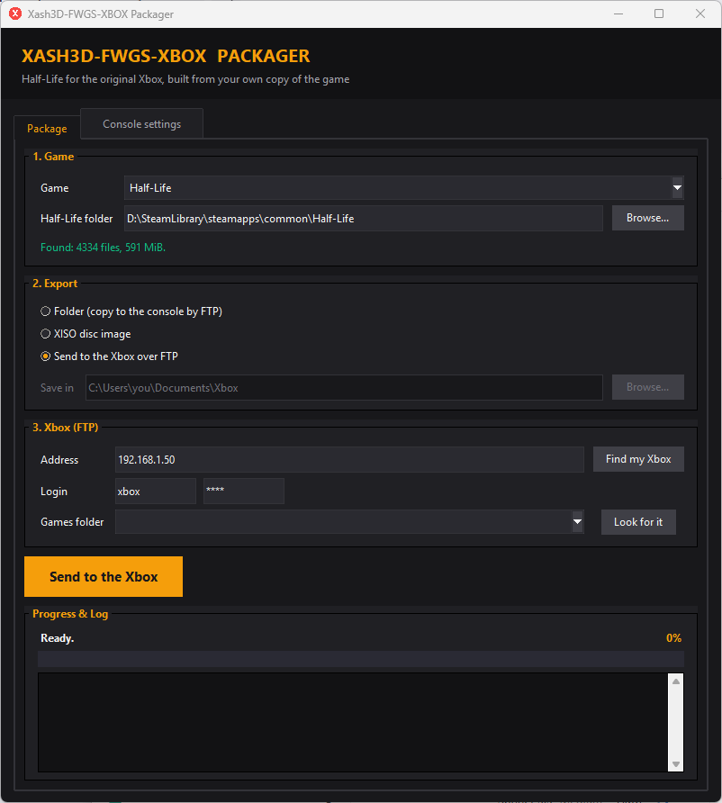
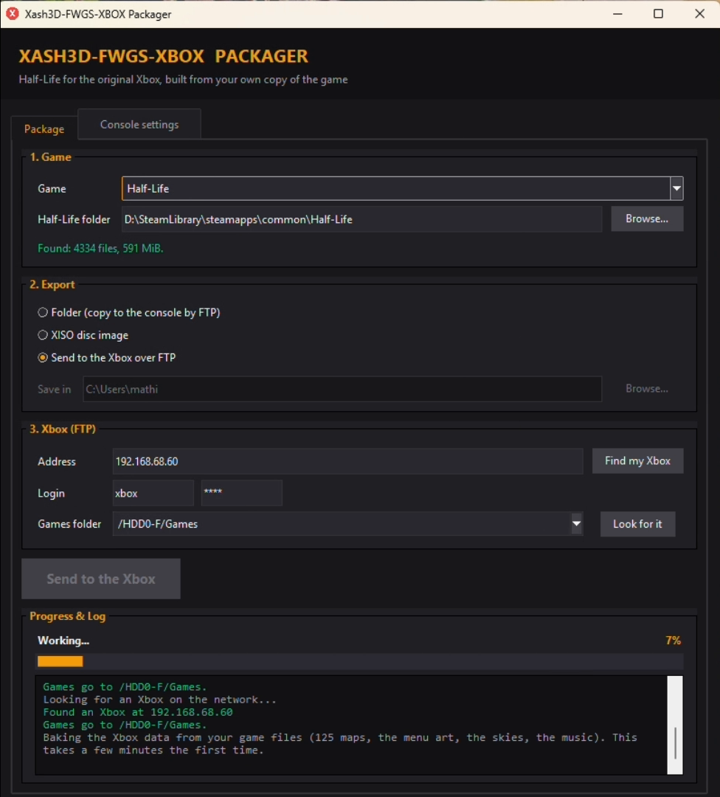
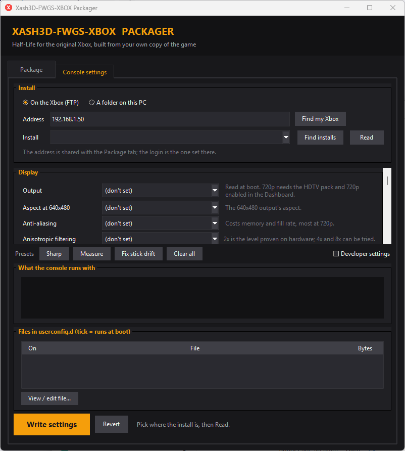

Put Half-Life on your Xbox
The Xash3D-FWGS-XBOX Packager combines your own Half-Life files with the Xbox build and writes a folder, an XISO disc image, or uploads straight to the console over FTP.
What you need
- Half-Life from Steam, installed on the PC you run the packager on (it finds the install by itself on Windows).
- An original Xbox with a way to run homebrew and an FTP server (the packager was developed against PrometheOS).
- Windows for the one-file exe. Elsewhere, Python 3 with Tk (on Debian or Ubuntu:
sudo apt install python3-tk).
Run the packager
Windows: download Xash3D-FWGS-XBOX-Packager-<version>-windows.zip from the
releases page, unzip it and run the exe. Keep the payload folder next to it: it
holds the Xbox build. The exe is not signed yet, so Windows says Windows protected your PC: check the zip against
SHA256SUMS.txt, then choose More info and Run anyway
(code signing policy). Anywhere else: unzip the portable package and run
python3 r3d_packager.py- Pick the game. Half-Life is available; Opposing Force and Blue Shift are listed and will follow.
- Check the folder it found. The engine needs
delta.lst(Half-Life 1.1.0.0 or later) andresource/gameui_english.txt; the window says what is missing. - Choose Folder (copy it to the console yourself), XISO, or Xbox over FTP, and where to save or send.
- Build. The first export takes about two minutes on a modern machine, because the maps are baked.
Without a window:
python3 r3d_packager.py --cli --steam "<Half-Life folder>" --format folder|xiso --out <folder>See it work
A 27-second recording of the packager (no sound): choose the game, pick Send to the Xbox over FTP, find the console and send. It ends while the first export is under way, which is the slow step: the packager bakes the Xbox data from your own game files, as the log says.







What ends up on the console
- Your
valvefolder, plusdefault.xbetitled "Half-Life", the menu font, colours, button art and translations. - Not your PC's settings:
config.cfg,autoexec.cfg,controller.cfgand the Steam Input files stay behind. A PCconfig.cfgsets every stick dead zone to 0, and original Xbox pads rest off centre, so the view would turn by itself. The console gets its ownxbox_config.cfg,xbox_controller.cfgandxbox_sound.cfg(run fromvalve.rc, before the settings the console saves, which override them). - One
.mpakper map, baked from your files. The retail.bspof a baked map is left off, because a loose.bspbeside its archive is loaded instead and the world then draws black. - The menu background tiles, the 19 skies as DXT1
.dds, and the music as ADPCM.xwav. video.cfgwithr_refdll "nv2a", and the menu's control images.
The result is cached (%LOCALAPPDATA%\Xash3D-FWGS-XBOX Packager\bake on Windows) and reused until the
baker or your game files change.
Playing in an emulator
The same folder or disc image runs in xemu and in xbased. Use v0.2.0 or later for sound: in v0.1.x neither emulator played the effects or speech, and without the Hardware audio setting nothing at all. The game now notices an emulator when it starts and plays through the console's audio processor, which both emulators play. It needs no setting, and a real console is not affected. An emulator is for trying the game, not for judging speed: the frame rates in the performance reports are from a console.
Uploading over FTP safely
"Find my Xbox" scans the network for the console and its games folders. Before it changes an existing
install, the packager surveys it and asks. It never replaces your saves or settings, and it moves the old
default.xbe aside as default.xbe.before-packager instead of overwriting it.
Next: change the console's settings from the second tab.
Code signing policy
Free code signing provided by SignPath.io, certificate by SignPath Foundation.
Status: the Windows packager is not signed yet. The application to SignPath Foundation is in progress,
and until it is approved Windows will warn about an unknown publisher: check the file against
SHA256SUMS.txt in the release.
- What is signed: the Windows packager exe of each release (the packager and the asset baker). It is built by
a GitHub Actions workflow from this repository's
source, and nothing else is signed. The Xbox build (
default.xbe) is data beside the exe, not a Windows program. - Roles: committers and reviewers: mathiasdbo, the project owner, who also approves every signing request. Members use multi-factor authentication on GitHub and SignPath.
- Privacy policy: this program will not transfer any information to other networked systems unless specifically requested by the user or the person installing or operating it. The packager connects only to the Xbox whose address you give it, or finds one when you press Find my Xbox, which scans your own network.